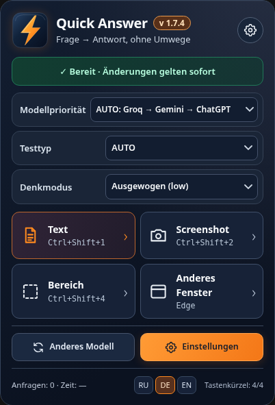
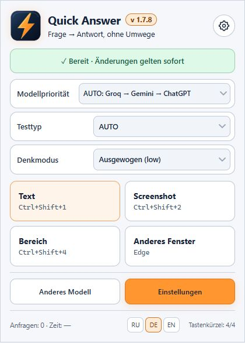

Edge-Erweiterung 1.7.8
Als entpackte Erweiterung ladbar und beim Projektautor im Einsatz. Tests mit allen Anbietern und Schulseiten wurden nicht durchgeführt.
Quick Answer ist ein Lernassistent für Selbstkontrolle und Prüfungsvorbereitung. Es gelten die Regeln Ihrer Schule oder Hochschule: Der Einsatz in Prüfungen, Klausuren und benoteten Tests ist untersagt.
Die Edge-Erweiterung liest Text oder Screenshot einer Seite, fragt einen KI-Anbieter mit Ihrem eigenen Schlüssel und zeigt eine kurze Antwort mit Begründung zum Nachprüfen. Sie klickt nichts automatisch.
Edge-Erweiterung · 1.7.8 Microsoft Edge · WindowsVor dem StartMicrosoft Edge und eigene Groq- oder Gemini-Schlüssel. Fragen und Bilder gehen an den gewählten Anbieter.


Installation, Funktionen, Datenschutz, Prüfung.
Wie in der Anleitung: ZIP laden, entpacken, in Edge einbinden.
Fragen und Bilder gehen an den gewählten KI-Anbieter. Dafür brauchen Sie eigene Schlüssel; die Erweiterung arbeitet weder lokal noch offline und sammelt keine Statistik.
Zwei getrennte Stände mit unterschiedlichem Prüfstand.
Als entpackte Erweiterung ladbar und beim Projektautor im Einsatz. Tests mit allen Anbietern und Schulseiten wurden nicht durchgeführt.
Desktop-Archiv entpacken und START_QuickAnswer.cmd starten. Benötigt Windows 10/11, Windows PowerShell 5.1, WinForms und .NET Framework. Keine kompilierte EXE. Strg+Alt+1: Bildschirm; 2: aktives Fenster; 4: Bereich. Schlüssel: DPAPI CurrentUser. Bilder werden an den gewählten Anbieter gesendet. Laufzeit, Anbieter, DPI und Tastenkürzel sind ungeprüft. Die mitgelieferte Bridge akzeptiert nur Browser-Erweiterungen; Desktop ist derzeit inkompatibel.
Desktop 0.1: nur Quellcode, keine EXE; Windows-Start nicht geprüft.
Die Anleitung führt in fünf Schritten von der Installation bis zu Schlüsseln und Diagnose.